Before any image warping, we will need to have a few sets of photographs with
a projective transformation between them. To obtain these photos, we can hold the center
of projection fixed and simply rotate the camera to capture the transformed photos.
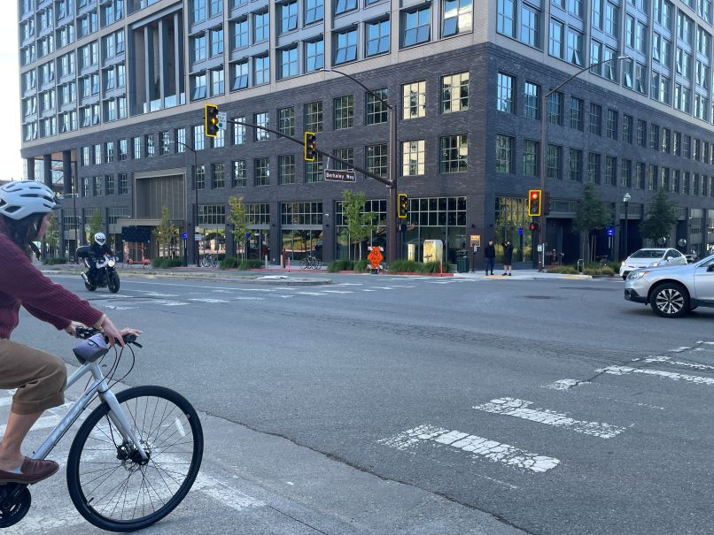
Building A
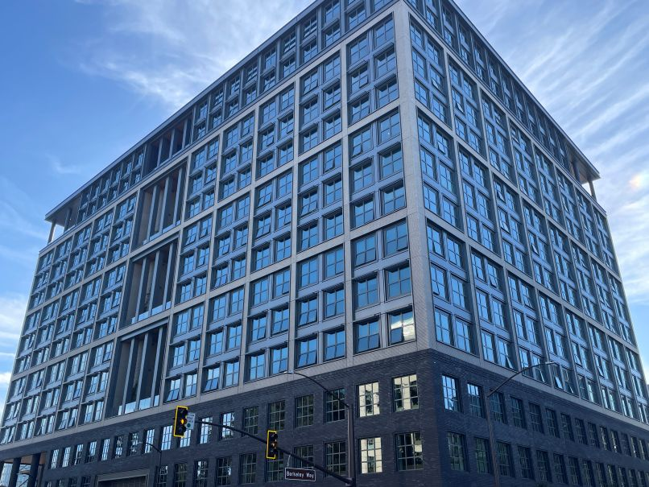
Building B
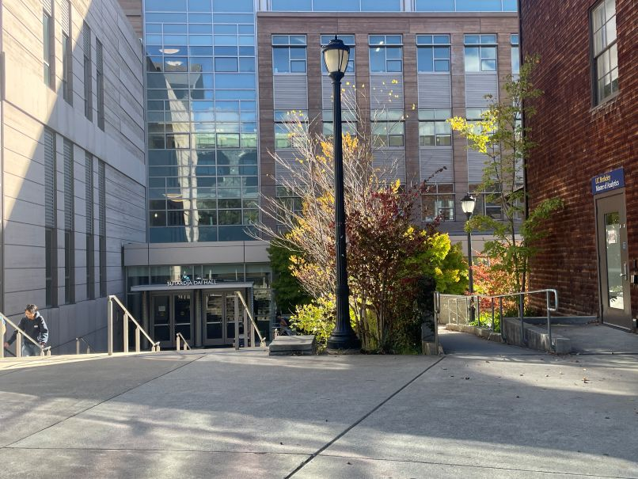
School A
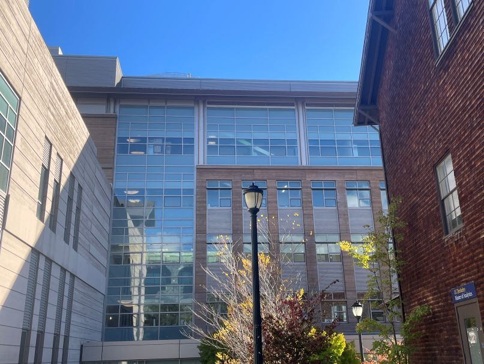
School B
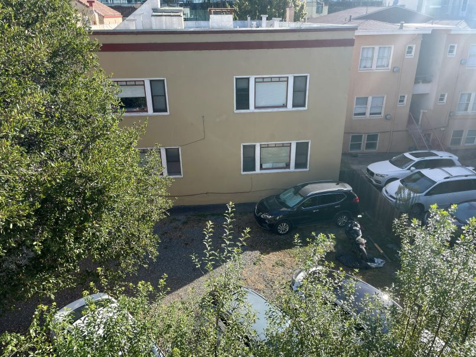
View A
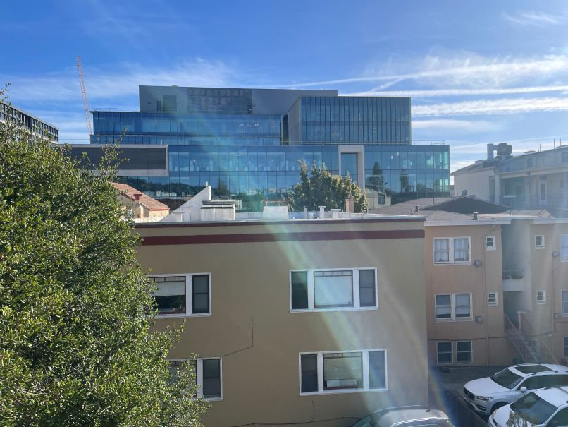
View B
In the photo sets above, on top of a fixed COP and rotation, there is also overlap of
roughly 40-50% within each set of images. This overlap allows for the correspondences and
for the future mosaics to be formed.
A.2: Recover Homographies
Now that we have the sets of photos, we have to recover the homographies between each set of images.
To do this, we first select 6 correspondence points on each image, representing the
exact same points. Even though we only need 4 points to recover the homography, we will use 6
as it produces an overdetermined system that is much easier to solve using least-squares.
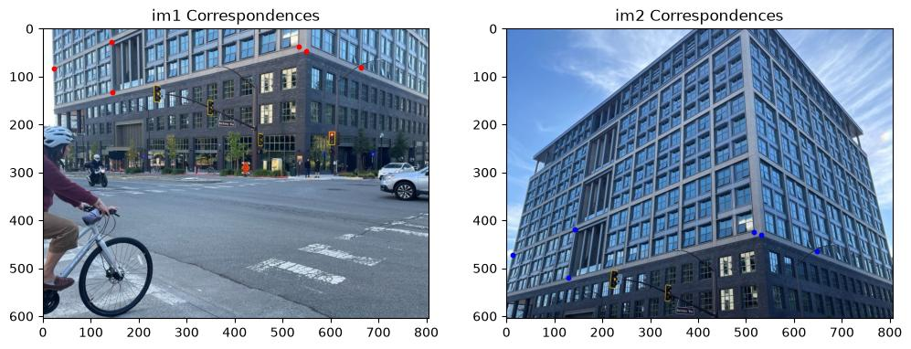
Building: Correspondence Points
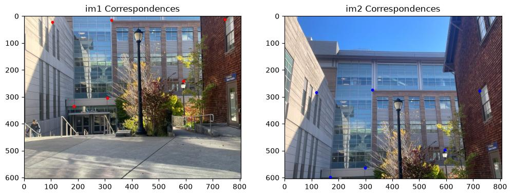
School: Correspondence Points
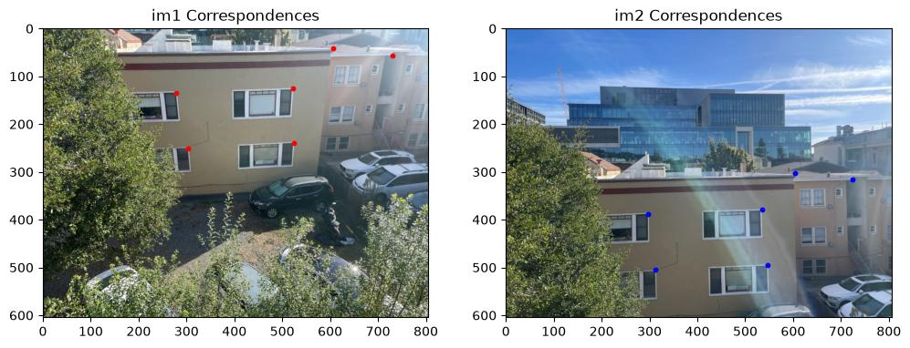
View: Correspondence Points
After obtaining the correspondence points, we can use them within a linear system of equations
in the form of \(AH=b\) to determine
the H associated with each set of images. For the homographies calculated, they will represent
the transformation from the right images onto the left images.
After obtaining the homographies, we can use them to warp each image towards their reference image.
This will be done through the use of inverse warping, as it produces the same results as
forward warping without the risk of holes appearing throughout our final image. Additionally,
as pixels after the warping may not line up exactly, we will have to interpolate to figure out
what the correct pixel value should be.
The two kinds of interpolation which we will be using will be Nearest Neighbor Interpolation,
where a pixel's value is equal to its nearest neighbor, and Bilinear Interpolation,
where the value is the weighted average of the four closest pixels.
To test two interpolation methods, we can perform rectification on some photos that
we know are rectangular, as this means that we can hard-encode what the resulting output size is.
Number SignPhoto FrameParking Sign
In all three original images above, the photos are taken at an angle, such that the items represented
don't appear rectangular.
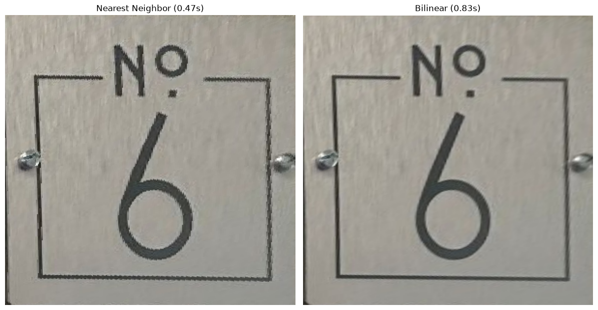
Number Sign: Rectification
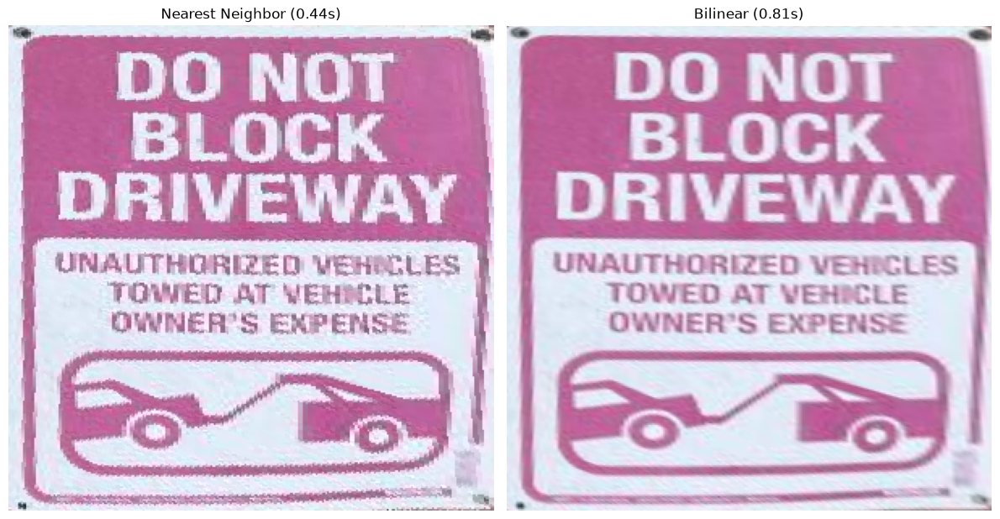
Photo Frame: Rectification
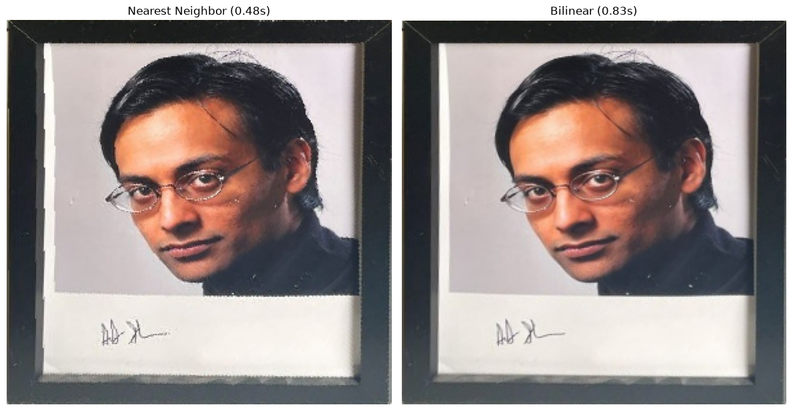
Parking Sign: Rectification
For each image, they were rectified using the Nearest Neighbor interpolation and
the bilinear interpolation. Across the board, bilinear interpolation took twice as long
to finish compared to nearest neighbor interpolation. On the other hand, the nearest neighbor
results contained much more aliasing compared to the bilinear ones. Both results are
expected as bilinear interpolation needs to query more pixels, but does average across them,
hence the smoother textures.
A.4: Blend the Images into a Mosaic
The final step now is to actually create the mosaics using the pictures taken in
section A1. To do this, we first have to use our computeH and
correspondence functions to find the homographies and the correspondence points
between each set of images. From there, we can find the bounding box for each mosaic, allowing
us to iterate through each pixel and grab the values from both images to create our final mosaic.
For the mosaics below, the warping was done using bilinear interpolation, as even if it takes
slightly longer, it produces a much cleaner result.
However, this alone faces two problems: visible seams where the images overlap and
an overall overexposed image. These two problems can be solved with the use of an
alpha mask. This mask utilizes simple feathering where alpha is set to 1 in the center of the image
and slowly approaches zero as it goes closer to the edges. Additionally, this alpha mask
sums up all of the pixel values multiplied with their alphas. This allows the final image to be divided
by the total, normalizing the image to the correct colors.